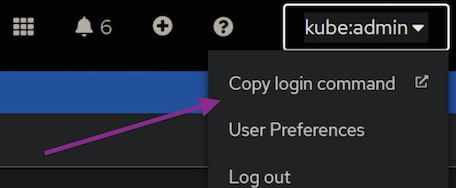

Deploy IBM Sterling Partner Engagement Manager on RedHat OpenShift
Playbook will run the last version of IBM Sterling Partner Engagement Manager, but take care of Kubernetes/Openshift version is supported
| Sterling PEM | OpenShift | Kubernetes | helm-chart |
|---|---|---|---|
| 6.2.4.0.1_standard | >= 4.14 | >= 1.27 | 1.4.2 |
| 6.2.4_standard | >= 4.14 | >= 1.27 | 1.4.0 |
| 6.2.3.2 | >= 4.14 | >= 1.27 | 1.3.2 |
Deploying Sterling PEM Essentials
1. IBM Entitled Registry
You must have kubectl, oc, git and ansible installed in your machine
Log in the IBM Container software library with the IBMid and password that are associated with the entitled software. Click Get entitlement key. With key export variable
export ENTITLED_REGISTRY_KEY=<entitlement_key>
2. Login on OpenShift
Access the OpenShift console and click on your user icon in the upper-right corner to retrieve your login command.

Click on Display Token, and copy the oc login command and paste it into your terminal. Sample:
oc login --token=sha256~P...k --server=https://c....containers.cloud.xxx.com:31234
3. Cloning ansible-ibm-sterling from git
git clone https://github.com/ibm-sterling-devops/ansible-ibm-sterling.git
4. Set roles path
To run playbook the playbook
cd ansible-ibm-sterling
export ANSIBLE_CONFIG=./ansible.cfg
5. Deploying Sterling PEM Essentials
1) First you need to provide PEM_INSTANCEID, this is used to define your environment. Samples: dev01, dev02, poc01, qa01, prod01
export PEM_INSTANCEID=dev01
2) To run playbook the playbook
ansible-playbook playbooks/deploy_pem_essentials.yml
Environment Variable
Environment variables for this role:
| Environment Variable | Default Value | Required | Description |
|---|---|---|---|
| ENTITLED_REGISTRY_KEY | Yes | IBM Entitled Registry key | |
| PEM_INSTANCEID | Yes | Used to define your environment | |
| PEM_ACTION | install | No | Action: install, upgrade, prebuiltdb |
| PEM_DEFAULT_PASSWORD | Password123! | No | Default Password for PEM applications |
| PEM_DEFAULT_PASSPHRASE | P@ssPhr4s3_890@ | No | Default Passphrase for PEM applications |
| PEM_KEYSTORE_PASSWORD | Change1t@ | No | Default Password for Keystores and Truststore |
| PEM_ADMIN_MAILADDR | admin@company.com | No | Provide the admin email address |
| PEM_SMTPHOST | smtp.company.com | No | Provide the SMTP host details |
| PEM_SMTPPORT | 25 | No | Provide the SMTP host details |
| PEM_DBVENDOR | DB2 | No | Database vendor: DB2, Oracle, MSSQL |
| PEM_DBHOST | No | Database hostname/ip address | |
| PEM_DBPORT | No | Database port | |
| PEM_DBNAME | PEMDB | No | Database name |
| PEM_DBUSER | db2inst1 | No | Database user |
| PEM_DBPASSWORD | passw0rd | No | Database user password |
| PEM_DBSCHEMA | DB2INST1 | No | Database user password |
| PEM_JMS_USERNAME | No | JMS Queue user | |
| PEM_JMS_PASSWORD | passw0rd | No | JMS Queue user password |
| PEM_JMS_KEYSTORE_PASSWORD | No | JMS Queue keystore password | |
| PEM_JMS_TRUSTSTORE_PASSWORD | No | JMS Queue truststore password | |
| PEM_SKIP_HELM | false | No | Avoid to run helm, only generate values.yaml |
| PEM_CM_ENABLE | false | No | Enable/Disable PEM Community Manager |
For all environment variables
- Role pem_std_setup_db2
- Role pem_std_deploy_db2
- Role pem_std_deploy_mq